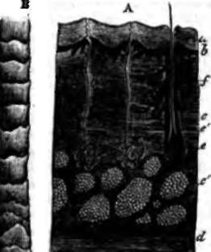

Form Of The Body Its Beauty. Continued
Description
This section is from the book "Wonders Of The Human Body", by Auguste Le Pileur. Also available from Amazon: Wonders of the Human Body.
Form Of The Body Its Beauty. Continued
The skin slides over the organs within certain variable limits, according as the cellular tissue which it carries with it is more or less relaxed, and as it is itself thick or thin. Thus it is movable on the back of the hand and top of the foot, on the front of the neck and on the surface of the-joints; it is almost immovable on the cranium, on the palm of the hand, and on the sole of the foot Elastic, very extensible, and very resistant, it sustains, without being torn, violent shocks and great compression; as in certain wounds by firearms; for instance, the projectile will penetrate the clothing to the skin, and injure the organs which it covers without itself being broken.
The skin is the organ of feeling, its surface is endowed with a sensibility which becomes extremely delicate at several points. Being constantly in more or less intimate contact with the atmosphere, it transmits to the economy the influence of external agents; and it is partly by its tissues that the fluids and gases are eliminated, which have done their office, and are to be thrown off as the ultimate and abandoned products of nutrition.
This function of continual exhalation makes the skin the regulator of the temperature of the body. When the temperature of the organism is elevated either by motion or any other internal or external cause, the sweat immediately appears, and the cooling or loss of heat caused by its evaporation reduces the temperature to its normal standard. Lavoisier was the first who clearly explained this function, so important from its utility, and from the serious consequences which result from its disturbance.
Almost entirely deprived of the covering which nature has given to animals, the colour of the human skin exhibits the richest and greatest variety of shades. This colour is incessantly modified by the sensations, the movements, by moral or physical emotions; and the transparency of its tissues give as much delicacy as vigour to the tones which animate it; it is not, as in the plumage of birds or in the shells of molluscs, an assemblage of brilliant colours, often without transition, but it is a blending at once the most harmonious and the most striking; it is light in its softest changes, in its most dazzling splendour.
On examining the thickness of the skin, we first find on the surface a thin transparent membrane, a sort of organic varnish, designed to receive the contact of the air and of external objects. This is the epidermis. Elastic and very flexible, it lends itself to every movement of the skin, protecting its exquisite sensibility and modifying its property of rapidly absorbing gases and soluble bodies. Although this membrane is so thin, we can discover a superficial or horny layer and two deeper layers. The first, the true epidermis, thickens and becomes callous under the influence of rubbing or pressure, as for instance on the heel. The other two layers are the mucous network of Malpighi and the pigmentary layer. It is in the substance of this last especially that the pigment, the colouring matter of the skin, is developed.
Fig. 10. The Skin.
a. Section of skin under the microscope.
a. b. Superficial and deep layers of epidermis.
c. Dermis—true skin.
d. Fatty areas of the deeper portions of the dermis.
d. Muscular layer subjacent to the skin, c d. Sweat glands and ducts.
f. Hair-follicle and sebaceous gland.
B. Hair seen under the microscope.
It is a black or brownish substance, more or less abundant according to the region of the body, individual, or race, but. constantly existing in normal conditions, alike in Europeans and in the people of Soudan and Australia. The presence of this pigment and its unequal distribution contribute to the variety of complexion exhibited in the white race.
Under the pigmentary layer is the dermis, the thickest and most resistant part of the skin; it is white, semi-transparent, and is composed of fibres of cellular tissue, fasciculated and very dense; of elastic fibres, ramified and disposed in network ; and of contractile fibre cells.
Immediately under the epidermis the surface of the dermis is covered with papillæ, little conical or rounded elevations formed by the extremities of the nerves and vessels, which are divided into nervous papillæ and vascular papillæ. Each nervous papilla is surmounted by an organ, which from its function and its microscopic dimensions is called a tactile corpuscle or corpuscle of touch. They are much less numerous than the other papillæ, and are not found everywhere on the skin. They are seen on the palm of the hand and on the lateral and palmar surfaces of the fingers, on the sole of the foot, on the tongue, the lips, and some other points. The epidermis follows exactly the shape of these papillæ, and thus forms, in tracing the furrows which separate them, those graceful meandering lines and elegant curves which we see especially on the palm of the hand. Very dense at its thickest portion, the structure of the dermis grows more relaxed on approaching its lower face, and forms spaces or areolae in which adipose tissue is developed, and at last it intimately unites itself to the subcutaneous cellular tissue, from which the dermis receives, and to which it sends, fibrous prolongations.
Gratiolet is inclined to admit that these so-called nervous papillæ are almost entirely wanting in nerves. He compares them to little keys, so to speak, pressing lightly on a very sensitive surface, and leaving there only very limited impressions.
Other connections also exist between the tegument and the subcutaneous cellular tissue: these are the nerves and the lymphatics and blood-vessels, which arise from the skin or terminate in it; and the follicles or glands, which are situated in the substance of the dermis, according to most authors, but in the subcutaneous adipose tissue, according to Robin. These send the product of their secretions by special ducts to the epidermis. These ducts traverse the substance of the skin sometimes in straight and sometimes in twisted lines, and give passage, some to hairs, to the beard and to products of this nature which are formed in the bulb of the hair-follicles; and others, to the secretions of the sweat-follicles and the sebaceous glands. The orifices of the sweat-follicles, situated at the base of the papillæ, exhale the secretion in the form of insensible perspiration, or in the form of little drops on the surface of the skin. Those of the sebaceous glands open, some into the hair-ducts, and others on the surface of the epidermis, and furnish to that membrane and its dependencies a fatty substance which seems to be designed to preserve the softness of the skin, and to protect it from injury or change from the sweat; we find them therefore in the greatest abundance at those points where the transpiration is most active.
Of these glands and follicles of which the microscope shows us the details, some attain the size of a grain of millet, but most of them hardly reach a millimetre in diameter. Their orifices are on the surface of the epidermis, a point long disputed, but now admitted by anatomists. But these orifices are not what were formerly denominated pores. It was supposed that there were gaps or spaces in the skin analogous to those in a sieve, and that the cutaneous secretions issued from these gaps; but neither in the epidermis nor in the skin are there any such gaps, and it will be seen from the preceding description wherein the doctrines of the ancients differ from, and wherein they resemble, those of our own day.
The epidermis is regarded by anatomists as impermeable, and yet experiment proves that even the perfect skin allows gases and fluids to penetrate the organism. If we do not admit that this absorption takes place through orifices at the surface of the epidermis, and if we suppose it to place by imbibition or endosmosis, it is plain that the skin is permeable, at least under certain conditions. But it is not equally so throughout its whole extent; the thicker the epidermis the slower and more difficult is the absorption; in short, the skin, like all the other tissues, absorbs certain substances to the exclusion of others.
We shall have occasion to discuss these phenomena in treating of absorption.
After enveloping the body, the skin folds back upon the openings which give access to its cavities, and modifying its nature, becomes, under the name of the mucous membrane, an internal skin, analogous, as we shall see further on, to the external skin in its structure, its functions, and in the intimate connection which is established by their reciprocal influence and unity.
Continue to:
- prev: Chapter II. Form Of The Body Its Beauty
- Table of Contents
- next: Chapter III. Structure Of The Body